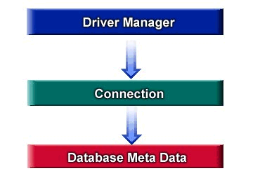

| Reference | Help | Introduction | Slide Show | Class Hierarchy | InterClient | ||
| PREV | NEXT | FRAMES | NO FRAMES | ||
 DriverManager is a connection factory and in turn a connection is a factory for database meta data.
The driver manager is the starting point for a jdbc application. The application must first register the jdbc drivers it wishes to use with the jdbc driver manager, which maintains a list of registered drivers. This will change in jdbc 2 where the application is freed from having to determine the drivers it will need.
Once the necessary drivers are registered, an application can get a connection by calling DriverManager.getConnection() with a database URL, username, password, and connection properties. The driver manager will use the jdbc driver that's appropriate for the particular database URL, and return a connection established using that driver.
Jdbc is a dynamic api, so once you get a connection to a database, you can query the database meta data which describes jdbc driver capabilities, database engine capabilities, and database schema such as columns, tables, stored procedures, etc..
See examples/FirstExample.java
| Reference | Help | Introduction | Slide Show | Class Hierarchy | InterClient | ||
| PREV | NEXT | FRAMES | NO FRAMES | ||